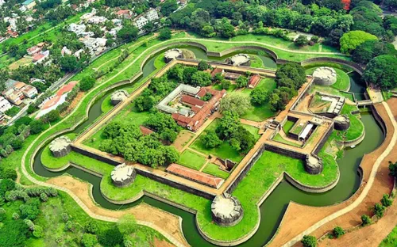

Palakkad Fort
Palakkad Fort is an old fort situated in the heart of Palakkad. It was recaptured and rebuilt grandly by Sultan Hyder Ali in 1766 A.D and remains one of the best-preserved forts in Kerala. There is a large ground between the Fort and the Palakkad Townhall, known as Kota Maidanam. The ground is now used to stage cricket matches, exhibitions, and public meetings. An open-air auditorium called "Rappadi", currently under the preservation of the Archeological Survey of India, is also located within the spacious grounds of the Fort. Additionally, there is a children's park on one side of the Fort.This children's park is known by the name "Vatika" , which has a beautiful garden alongside outdoor playground equipments for kids. The Palakkad Special Sub Jail is also located within the fort. There is a small shrine dedicated to Lord Hanuman known as Anjaneya Swamy temple, The temple is situated on the Eastern entrance of the fort, Figure Anjaneya is carved on the inner side of the fort wall. The murti of Lord Anjaneya is south facing, while the lord himself is facing west. It is believed that Tipu and his warriors worshipped the lord to protect them from all enemies.
Malampuzha
One of the largest reservoirs of Kerala, Malampuzha Dam is located near Palakkad in South India. It is surrounded by the Western Ghats on all side. It is the largest reservoir in Kerala and is served by a network of two canal systems. Malampuzha Dam is a combination of a masonry dam with a length of 1,849 meters and an earthen dam with a height of 220 meters. The dam is 355 feet high and crosses the Malampuzha River, which is a tributary of Bharathappuzha, which is Kerala's second largest river. The dam has many attractions nearby like the rock garden, ropeway, snake park, amusement park and visitors often enjoy boating here as well. Some major tourist attractions near Malampuzha Dam are Entrance Garden, Yakshi Garden, Japanese Garden, Upper Garden and viewpoint, Cable car ride, Fish shaped aquarium, Toy train for kids, Fantasy Park, Spiced fruits camp along with some excellent trekking tracks and river baths. The ropeway, which takes the people on an aerial tour of the park and the gigantic Yakshi (who is an enchantress) sculptured by Kanai Kunhiraman, a renowned sculptor of Kerala; attracts a lot of travelers here.
Kava Island

In the Keralan district of Palakkad, next to the renowned Malampuzha dam, is a natural island called Kava Island. One of Palakkad's less visited areas, it is tucked away in the scenic Western Ghats. Kava Viewpoint is a tranquil retreat that comes to life in the monsoon season. Kava is a beautiful area with a tranquil lake that is bordered by hills covered in thick forestation. For those who enjoy nature walks and hikes, the scenic location is a delight. The experience of touring the attraction is made enchanted by the chirping birds, the crisp, clean air, and the lush foliage. Visitors can savour the vista of the lusciously green adjacent mountains from the Kava Viewpoint. One of the motivations to arrange a vacation here often is the desire to take excellent selfies and the lush, attractive surroundings. As the first rain cloud arises here, locals refer to Kava as "the womb of the rain clouds."
Nelliyambathi
Widely known as poor man's Ooty, Nelliyampathy is a very popular hill station in Palakkad district. Tourists ply up the hairpin curves to this stunning tourist destination in large number every day to savour the panoramic vistas they enjoy at various viewpoints of Nelliyampathy which is around 1500 metre above sea level. Even the long drive up the hill through the evergreen forest is a thrilling experience not only for its stunning views of the valleys but also for the sheer number of waterfalls you can see on the roadside. Nelliampathy is surrounded by tea and coffee plantations. A viewpoint called Seethargund is situated 8 km away from Nelliyampathy. Seethargund, according to beliefs is the place where Lord Rama, Laxmana and Seetha rested during their exile. Another attraction of Nelliyampathy is Kesavanpara viewpoint. The film Mrigaya starring Mammootty was shot here.
Silent Valley

The forests of the Silent Valley National Park harbour some of the most pristine, unique and highly productive forests in the world. It is located in the Nilgiri Hills. This national park has some rare species of flora and fauna. Silent Valley National Park was explored in 1847 by the botanist Robert Wight. It is located in the border of Mannarkkad Taluk of Palakkad district, Nilambur Taluk of Malappuram district, Kerala, and Nilgiris district of Tamil Nadu. Such is the significance of this last undisturbed South Western Ghats mountain rain forest that boasts of exquisite flora and fauna and expansive vegetation. From the unending green escapade that captures your heart, to an ecosystem that has stood the test of time, Silent Valley is truly one-of-a-kind. This tropical evergreen wet jungle in India is home to many species.Out of all the best Places to visit in Kerala, the Silent Valley National Park remains a hidden gem, perfect for an offbeat escape from bustling city life. Nestled amidst the scenic Western Ghats, you can immerse yourself in the amazing landscapes and lush rainforests of Silent Valley, where harmony meets supreme, and every moment is a testament to the profound beauty of nature.
Parambikulam Tiger Reserve

Parambikulam Tiger Reserve is situated in Chittur taluk of Palakkad district and is about 100 km away from Palakkad. The challenging hill ranges here are placed at an altitude of 300 to 1438 m above sea level and the place offers a good climate with temperatures ranging from 15 degree Celsius to 32 degree Celsius. Sprawling over an area of 285 sq km, Parambikulam can boast of the first scientifically managed teak plantations of the world and also houses the world's tallest and oldest teak tree. The reserve's claim to fame is the tiger population - which shows significant increase in periodical censuses. According to the 2010 census, Parambikulam and surrounding sanctuaries are home to 32-36 tigers. About 39 species of mammals, 16 species of amphibians, 61 species of reptiles, 47 species of fish, over 1000 species of insects and 124 species of butterflies have been reported from the region. The presence of 250 species of birds offers fantastic bird watching opportunities. The lush habitats are home to some spectacular species like the Grey-headed Fishing Eagle, the Peninsular Bay Owl, the Nilgiri Wood Pigeon, the Black-capped Kingfisher, the Great Black Woodpecker and the Lesser Grey-headed Fish Eagle.
Dhoni waterfalls
Dhoni Hills, located around 12 kms from Palakkad town, is a popular tourist destination in Kerala. With its misty mountains, a pristine waterfall Dhoni is a lush green tropical paradise which holds you to captivate in its rich natural beauty. An ideal place to watch the Mother Earth in different hues, tourists are attracted to Dhoni for the waterfalls situated inside the forest. You can also feel the majestic Western Ghats emerge in front of you as you reach near the entrance of Dhoni reserve forest. Dhoni is more than simply waterfalls; it is also a refuge for wildlife enthusiasts. The reserve forest around Dhoni is teeming with wildlife, including elephants, tigers, and deer. The misty mountains and virgin reserve forest, located barely 12 kilometers from Palakkad town, contribute to Dhoni’s attraction as a nature lover’s dream. Adventurers embark on a three-hour hike from the base of the Dhoni hills to see nature’s unadulterated grandeur. The rich green surroundings create a quiet ambiance, giving it an excellent retreat from the rush and bustle of city life. The hike begins at the foot of the hills near teak plantations and continues along a narrow mountain road accessible only by four-wheel drive and bicycles.
Kollengodu
Kollengode is another village 19 kms south of Palakkad, known for its vast stretches of verdant paddy fields. The Kollengode Palace built in the traditional style of Kerala architecture is a major attraction here. The place is also famous for the Kachamkurissi temple dedicated to Lord Vishnu (Hindu god) and a memorial for the renowned poet P. Kunhiraman Nair,which is worth visiting. At a distance of 26 Kms from Palakkad Railway Station, Kollengode Palace was once the seat of the Kollengode Rajas. The name was derived after 'Kollen' (black smith community), who resides here. The Kollengode Palace has now been converted into a luxury hotel with an Ayurvedic spa. Many international tourists come here for Ayurvedic treatment in natural surroundings. The town is surrounded by the Nelliampathy Hills on one side and a large area of fertile paddy fields on the other. The Gayathri River, a tributary of Bharathpuzha winds its way through the town. The place is known for its rural setting and tourists come here to enjoy the village life. There is a famous Vishnu temple in Kollengode which is built in typical Kerala style of architecture. There are facilities for trekking in Seethakundu and Government hills near Kaachankurchi.